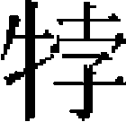
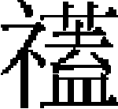
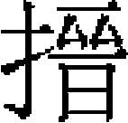
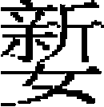

列女中
白氏 胡孝女任仲文妻林氏 寧居斌妻獨吉氏韓筠妻劉氏 傅賀妻陳氏劉似之妻徐氏 張氏女高氏 李景文妻徐氏 秦閏夫妻柴氏 鄭琪妻羅氏 陳淑真 左幼白妻龍氏［一］ 焦士廉妻王氏杜氏 蕭氏 柯節婦 月娥丁氏 鍾節婦 劉冀之 義烈女朵那 韓氏女 胡妙端 梁王女阿

公主女僧奴 脱脱懷氏 辛瑜妻傅氏史五妻徐氏 張春兒 秦筆妻 吴妙寧 孔胥妻周氏 張貞 吴良正賈善妻宋 何婦賀氏 費元琇 楊節婦吴氏 陸燾婦趙氏 徐謝氏 李氏趙氏［二］ 黄元珪妻俞氏［三］ 謝氏 林克成妻陳氏 劉公翼妻蕭氏
何婦賀氏 費元琇 楊節婦吴氏 陸燾婦趙氏 徐謝氏 李氏趙氏［二］ 黄元珪妻俞氏［三］ 謝氏 林克成妻陳氏 劉公翼妻蕭氏
白氏，太原人。夫慕釋氏，棄家爲僧。白氏年二十，留養姑不去，績紝以供日膳。夫一日還，迫使他適，白斷髮誓不從，夫不能奪，乃去。姑年九十卒，竭力營葬，畫姑像祀之終身。
胡孝女泰，海鹽人，匠氏女也。母沈氏，患手足攣，積年不愈。家人侍疾者咸厭倦，泰旦夕奉盥櫛，溲矢起卧，必抱扶之。兄娶妻，與母析居，泰遂及其壻留母家以養母。至順間，歲薦饑，泰夜傭作織紝以養母，至翦髮鬻之以贍不足。聞郡人戴甲母有疾，刲胸肉療之得差，一日俟家人出，即引刃刲胸肉，雜他肉以進，因病創。沈氏年且七十，病如故，泰侍疾三十餘年，益加謹。初，泰許嫁宋氏子，疾弗良。或謂泰宜離婚，泰不從，卒嫁之，執婦道甚謹。夫亦化其義，視外姑如母。
又任仲文妻林氏，寧海人。家貧，年二十八而寡。姑患風疾，不良於行，林氏旦暮扶侍惟謹。撫育三子，皆有成。年百又三歲卒。
甯居斌妻獨吉氏，楊州總管獨吉禮之女。居斌，河内人，爲樞密院斷事官，卒於京師。獨吉氏扶其喪歸河内，廬墓下三年。禮部旌其門曰「貞節獨吉氏之門」，表其坊曰「貞節坊」。
又韓筠妻劉氏，絳州正平人。筠父病，碾藥石墮傷足，竟中風死。劉氏撫一子一女，皆成立。筠死時，劉氏年二十七，嫠居六十年乃卒。禮部旌之。
傅賀妻陳氏，東陽人。賀卒，陳氏年二十四，家貧，以紡績養其姑三年。姑又卒，陳氏哀毁逾常，内外因憐其無子而貧，勸之改適。陳氏矢於衆曰：「吾寧餓死，不肯幸生！」逾五年，奉舅姑與賀之柩而葬之，以從子爲賀嗣，鄉黨賢之。
又劉似之妻徐氏，蘭谿人。歸似之逾年，有孕，而似之卒。俄舉一男，名潛。徐氏泣而誓曰：「劉氏之家幸而不墜，吾敢有二心乎？」潛生二子一女，亦早卒。姑婦俱以節行爲鄉人所重。
張氏女，高郵人。賊陷高郵，知女有姿，叩其家索之。女方匿複壁間，賊將害其父母，女不得已，乃出拜賊。賊即以女行，女欣然從之，過橋投水死。
有高氏婦者，同郡人也。攜其女從夫出避亂道旁空舍，脱金纏臂與女，且語夫令疾行。夫挈女稍遠，乃自經。賊至，焚其舍。夫抵儀真，夜夢婦來告曰：「我已死，彼焚其舍矣。」其精爽如此。
李景文妻徐氏，名彩鸞，浦城徐嗣源之女。略通經史，每誦文天祥六歌，必爲之感泣。至正十五年，青田賊寇浦城，徐氏從嗣源匿山谷。賊至，持刀欲害嗣源，徐前曰：「此吾父也，寧殺我。」賊舍父而止徐氏，徐氏語父曰：「兒義不受辱，今必死，父可速去。」賊拘徐氏，至桂林橋，拾炭題詩壁間，有「惟有桂林橋下水，千年照見影形清」之句。乃厲聲駡賊，投於水。賊競出之，既而乘間復投水死。
秦閏夫妻柴氏，晉寧人。閏夫前妻遺一子，尚幼，柴氏撫養如己出。未幾，柴氏有一子。閏夫死，家事日微。柴氏辛勤紡績，遣二子就學。至正十八年，賊犯晉寧，其長子爲賊所掠，既而得脱。初，在賊時，有惡少與縣人張福爲仇，往滅其家。及官軍至，福訴其事，事連柴氏長子，法當誅。柴氏引次子詣官，泣訴曰：「往從惡者，吾次子，非長子也。」次子曰：「我之罪，可加於兄乎？」鞫之，至死不易其言。官反疑次子非柴氏所出，訊之他囚，始得其情。官義柴氏，爲言曰：「婦執義不忘其夫之命，子趨死而能成母之志，此天理人情之至也。」遂免其長子，次子亦得不死。二十四年，有司旌其門，並復其家。
鄭琪妻羅氏，名妙安，信州弋陽人［四］。幼聰慧，能暗誦《列女傳》。年二十，歸琪。琪大家，同居百餘口。羅氏執婦道，無間言。琪以軍功擢鉛山州判官，羅氏封宜人。至正二十年，信州陷，羅氏度弋陽去州不遠，必不免於難，輒取所佩刀，淬礪令銛甚。琪問何爲，對曰：「時事如此，萬一遇難，爲自全計耳。」已而兵至，羅氏自刎死，時年二十九。
陳淑真，富州陳璧女。璧故儒者，避亂移家龍興。淑真七歲能誦詩鼓琴［五］。至正十八年，陳友諒寇龍興，淑真見鄰媪倉皇來告，乃取琴坐牖下彈之，曲終，泫然泣曰：「吾絶絃於斯矣。」父母怪問之，淑真曰：「城陷必遭辱，不如早死。」明日賊至，乃自投東湖。水淺不死，賊抽矢脅之上岸，淑真不從，賊射殺之。衣帶有刺繡字，詞曰：「海水羣飛，不二其行。湖水澹澹，之子澄清。視刃視飴，見衣見清［六］。」
左幼白妻龍氏，永新人。幼白少負才名［七］，以父蔭爲江西廣濟庫使，後至元丁丑卒於軍。龍氏年二十九，即翦髮，勺水不入口。柩至，迎於十里外，徒跣號痛，親挽舟以前，哭奠五年，不離几席。嘗折海榴一枝，插瓶供几上，旬日視之，根枿勃然。鄰婦感慕，皆效節不嫁。翰林承旨歐陽玄爲書「榴萱」二字以表之。子二人，善詠，皆力學世其家。
焦士廉妻王氏，博興人，養姑至孝。至正十七年，毛貴作亂，官軍競出虜掠。王氏被執，紿曰：「我家墓田有藏金，可取也。」信之，隨王氏至墓所。王氏哭曰：「此我死所，非藏金所也。」乃與妾杜氏皆遇害。
又劉公翼妻蕭氏，濟南人。至正十八年，毛貴陷濟南，蕭氏自縊死。
柯節婦陳氏，長樂石梁人。至正二十一年，海賊劫石梁，其夫適在縣城，陳氏爲賊所執，且行且駡。賊亂捶之，挾以登舟，駡不已，自投江中。其父方卧病，見女至，呼之不應，駭曰：「吾豈夢邪？」既而有自賊中歸者，言陳氏死狀，乃知其鬼也。明日，屍逆流而上，止石梁岸旁。時盛暑，屍已變，其夫驗其背有黑子，乃慟哭曰：「是吾妻也！」舁斂之。
月娥丁氏，西域人，孝子丁鶴年之姊。少聰慧，通經史。及長，歸葛通甫。冢婦盧，見月娥德踰於己，一日，率諸婦、諸女請曰：「願以諸婦、諸女屬之娣，幸蚤莫教之。」月娥告以婦道，及援引古烈女，示以爲則。既而豫章羣盜起，城陷，月娥歎曰：「吾生簪組世家，其忍出犬彘下邪！」遂抱所生女赴水死。諸婦、諸女咸曰：「彼之死，必安於義，吾可幸生乎？」亦相與死水中，凡九人。時夏暑，屍七日不沈，顔色如生。郡人駭異，議曰：「十節同志，死不可異壙。」乃於故居之南黄池里作巨穴，同葬焉，題其石曰「十節墓」。
鍾節婦，宜陽黄氏女。年十六，爲鍾秉敬妻。秉敬父義昭，雄勇。當紅巾賊起，鄉民賴保全者數萬户。既而賊大至，父子戰死。賊聞婦美，將强室之，以兵躪其里。婦隨里民匿石洞中，曰：「汝等同禍，以我故。然義不可令鄉里同死，吾當自爲計。」遂出臨小石潭，即自投潭中。衆遽救，幸不死，乃誑賊曰：「投潭中死矣。」賊大怒曰：「死以其首至。」衆懼，無計，或曰：「婢雪兒有貌，可令之代。」衆然之，乃飾婢使出拜，曰：「此鍾相公女也，願獻之將軍。」賊喜，擁之去，號曰娘子。婦得免，然竟以悸卒。
劉冀之，衡水曹泰才之妻也。年十二，通古文《孝經》。見小學書，固請讀之，母不許。一日，聞諸兄誦《内則》，至「姆教婉，娩聽從」，復請於母曰：「此亦女子事。」遂通經義。及笄，適泰才。紅巾陷河朔，曹故大家，避兵縣西聊城邨。賊掩至，見劉美，驅之去。劉曰：「婦人從一而終，二夫且不可，况賊乎！」賊乃出金珠置前，被以文綺，劉手裂之。賊擁上馬，墜地者數四。賊怒，繩其項，繫馬後曳之。劉以爪據地，頭觸石流血，駡賊死。
義烈女朵那者，杭州畏兀家女奴也。至正中，寇陷杭，至其家，無所得，乃反接主婦柱下，拔刀礪頸上。諸婢皆散走，女獨身覆主婦，請代死，且謂賊曰：「汝利吾財，豈利殺人哉？凡家之貨寶，皆我所掌，主母固弗知。若免主母死，我當悉與汝不吝。」寇解主婦縛，女乃出金玉等置堂上，寇争相攫取。已而又欲汙之，女持刀自刎曰：「我主二千石，我誓不奴他姓［八］，况汝賊乎？」賊舍之去，女泣拜主婦曰：「妾受命主管鑰，今全身，而失主人之財物，非義也。」遂自殺，人莫不難其義烈。
韓氏女，保寧人。年十七，遭明玉珍兵亂，韓爲所掠。乃僞爲男子服，既而果被獲，隸軍中。七年後，從玉珍兵攻雲南，遇其叔父，贖歸成都。適尹氏，猶處子也。人皆稱爲「韓貞女」。
胡妙端，嵊縣人，適剡溪祝氏。至正二十年春，爲苗軍掠至金華，義不受辱。乘間嚙指血，題詩壁上，赴水死。苗帥服其節，爲立廟祀之，邑人顔曰「烈女廟」。
梁王女阿

公主，大理段功妻也。功初襲爲蒙化知府，明玉珍自蜀分兵攻雲南，梁王及行省官皆走，功獨進兵敗之。梁王深德功，以公主妻之，授雲南行省平章政事，功自是不肯歸。或譖之梁王曰：「段平章心叵測，盍早圖之？」梁王密召公主，謂曰：「功志不滅我不已，今付汝孔雀膽，乘便可毒之。」主潸然，私語功曰：「我父忌阿奴，願與阿奴西歸。」因出毒示之，功不聽。明日，邀功東寺演梵，陰令番將格殺之。公主聞變，大哭，欲自盡，王防衛甚密。因悲憤作詩曰：「吾家住在鴈門深，一片閒雲到滇海。心懸明月照青天，青天不語今三載。欲隨明月到蒼山，悮我一生路裏彩。吐嚕吐嚕段阿奴，施宗施秀同奴歹。雲片波潾不見人，押不蘆花顔色改。肉屏獨坐細思量，西山鐵立霜瀟灑。」竟死。功女僧奴，將適建昌阿黎氏，出手刺繡文旗，屬功子寶曰：「我自束髮，聞母稱父冤。恨非男子，不能報，此旗所以識也。」人皆敬其志節。
脱脱懷氏，樞密副使燕帖木兒妻。明兵入雲南，燕帖木兒敗，馳歸。氏閉門不納，曰：「爾受梁王厚恩，兵敗不死，何以見爲？」乃鴆其二子一女，命侍者曰：「我死，爾舉火焚屋，毋令辱我。」遂飲鴆卒。
辛瑜妻傅氏，諸暨人。瑜以軍興期會，迫死道上。傅蒲伏抱屍歸，號泣三日夜。屍有腐氣，猶依屍呵舐，冀復甦。已入棺，至嚙其棺成穴。及葬，投身壙中。母强挽之出，囑侍婢謹視之。閲數日，紿婢具湯沐，既而失所在。明日，婢汲井，見二足倒植井中，乃傅也。
又史五妻徐氏，定遠人。五爲義兵百夫長，兵至，五戰死。氏求夫積屍中，莫能識。以口吮血，辨驗得實，載之歸。治大棺，將殮，乃沐浴自經其側。
張春兒，葉縣軍士李青妻也。青臨陣負傷歸，曰：「吾殆矣！汝可善事後人。」春兒截髮示信曰：「妾生寒門，頗曉大義，君勿憂。」比青卒，哭之，垢面流血。旋諭匠者造大棺，盡納夫之衣服，匠如其言。將斂，春兒自經庭下，家人共殯之。
秦筆妻，江陰人，失其姓氏。筆遭亂，挈妻依同郡朱判官璚，居吴中。筆病卒，貧無以斂，璚爲具棺衾，且思所以卹養其妻。其妻泣謝曰：「良人以藝游

紳間，《詩》《書》禮義之教，妾亦嘗與聞矣。妾以未亡故，累鄉長者，其如義何？」璚加慰之。夜哭益哀，自經死。璚爲合葬而表其墓。吴妙寧，上海人。年二十一，贅同里張氏子。邑大姓以叛黨連坐其父，妙寧泣曰：「吾父苟無地爲解，族其赤矣。吾不遄死，禍延良人，悔孰甚？」即投繯死。俄徵繫吏至，聞已没，唶異而去。時人爲之謡曰：「紅羊年，黑鼠月，張婦吴，儼遺烈。九山風酸泖波血，二氣舛錯愁雲結。一樹梅花驚飄雪［九］。」
孔胥妻周芙，江陰人。孔素無鄉曲譽，衆以通賊愬於官。胥度不免，密書與妻早爲計，庶免軍配。周神色不亂，言笑平常。乃具酒饌祭舅姑，延親戚劇飲。是夕素服自縊死。
張貞，建康張叙女，嫁海縣周曹，坐法下獄瘐死。先是，貞在徒籍中，懼配軍，投秦淮河而死。及周屍過秦淮河，貞湧浮水上，面如生。人皆曰：「此張訓導女也。」聞者哀之。
吴良正，義烏儒家女。姑嗜酒，家固貧，必力致之，姑醉乃已。姑卒未殯，賊至，家人悉竄，吴獨侍側。人呼曰：「汝不愛頭？」吴曰：「姑未殯，妾就刃下，死不悔。」撫棺長慟。兵義之，釋去。
又有烏傷里賈善妻宋

，性沈默。家饒於貲，平日事賈甚謹。明兵駐蘭溪，賈攜避浦陽城竇山鄉。無賴乘時肆掠，俄突至，懼侵己，擲袖銀於地，投絶澗死。何婦賀氏，永新州人。蘄兵陷吉安，殺其夫，將汙之。賀曰：「妾聞師令嚴，淫虐者斬以狥，汝獨不懼死乎？」兵以言諸帥，帥議聘焉。届期，帥且至，賀閉户不納，齧指血，題詩曰：「涇渭難分清與濁，妾身不死死紅巾。孤兒尚忍更他姓，烈女何曾事二人。白刃自揮心似鐵，黄泉欲到骨如銀。荒村日落猿啼處，過客聞之亦愴神。」遂引刃自斷其喉，猶端坐不仆。帥排户入，見之驚去。
費元琇，上海人，江陰知事楊州朱道存妻。先是，江陰亂，元琇依父居松江。苗軍掠郡城内，苗軍手刃，將入犯之，元琇叱曰：「我夫見勤王事，汝輩奚敢犯我！」投釵珥於地，苗攫之去。既而苗沓至，欲驅迫就道。元琇度不免，乃攀堂楹厲聲曰：「苗狗，毋辱我！」遂遇害。爪入楹木，血沁於指。
楊節婦吴氏，湖州人。年二十五，有殊色。至正丙午秋，明兵偪湖州［一〇］，吴自度必不免，乃攜二子投苕水中。逾月，城破，父媪見其母子並浮水上，咸嗟異焉。
陸燾妻趙氏，印縣人。燾與趙隱居瓢湖，兵猝至，燾夫婦舍舟登岸。兵偪之，傷刃者三，遂仆淖中。趙躍投淖同死。
徐謝氏，名蠲，松江宦家女。素凝重，不妄言笑。苗兵燬掠，謝從夫逃，適與苗遇，驅之行。時里閈少艾被縶者相屬，謝阻板橋，遽厲聲曰：「橋有柱，我儂趨救可乎！」苗怒，斫其肩以號於衆，既而悔曰：「彼烏涇之清濟也。」相與唶唶而去。
李氏，行軍鎮撫彭九萬妻，吉水人。至正戊申，五溪苗突入城，李及其子友諒皆被執。驅之行，不從；脅以刃，不動。問所求，李曰：「我命婦也，有死而已。」因語友諒曰：「刎無刃，經無索，奈何？」諒曰：「當激賊怒以就死。」李乃極口大駡，苗怒，殺之。
有趙氏婦者，抱嬰兒匿縣學中。苗强汙之，不可，死於禮殿南。血模糊，影留殿階不滅，剗去復存。後人立石以志其處。
又黄元珪妻俞氏，山陰人。賊火其廬，將擁氏去，氏躍入火中死。
同時謝氏，爲張彌遠妻。亦遭兵執，不屈而死。
林克成妻陳氏，福寧人。至正末，兵亂，陳氏奉姑匿山洞中。後潛依母家，收克成一家遺骸葬之。時年二十四，母欲其改適，陳氏泣曰：「棄幼稚而改嫁，吾必不爲也！」於是養姑撫子，卒存林氏之後。有司旌之。
劉公翼妻蕭氏，濟南人。至正十八年，毛貴兵至，蕭氏曰：「妾誓先死，若城陷被執，悔將何追？」亡何城陷，蕭縊死。
【校勘記】
［一］「左幼白妻龍氏」，「幼」原作「友」，據正文及李祁《雲陽集》卷八《左氏節婦傳》改。
［二］「趙氏」，原倒在「謝氏」下，據正文乙正。
［三］「黄元珪妻俞氏」，「妻」字原脱，據正文補。
［四］「弋陽」，原作「戈陽」，下同，據《元史》卷二〇一列傳第八十八《列女二》改。
［五］「歲」，原脱，據《元史》卷二〇一列傳第八十八《列女二》補。
［六］「清」，疑誤。按陳淑真剌繡詩，魏源《元史新編》卷五二作「士二其行」、「見衣見情」，乾隆《漢陽縣志》卷二九作「士貳其行」、「見衣見心」。
［七］「幼白」，原作「幼曰」，據李祁《雲陽集》卷八《左氏節婦傳》改。上文作「幼白」不誤。
［八］「奴」，陶宗儀《南村輟耕録》卷一一、田汝成《西湖遊覽志餘》卷九、萬曆《杭州府志》卷八九同，嘉靖《浙江通志》卷四八、康熙《浙江通志》卷四〇、康熙《錢塘縣志》卷二八作「從」。
［九］「一樹梅花驚飄雪」上，王逢《梧溪集》卷四《張節婦吴氏辭有引》有「百里泥塗昏墊中」，當補。
［一〇］「湖州」，原作「胡州」，據上文改。
本章完!